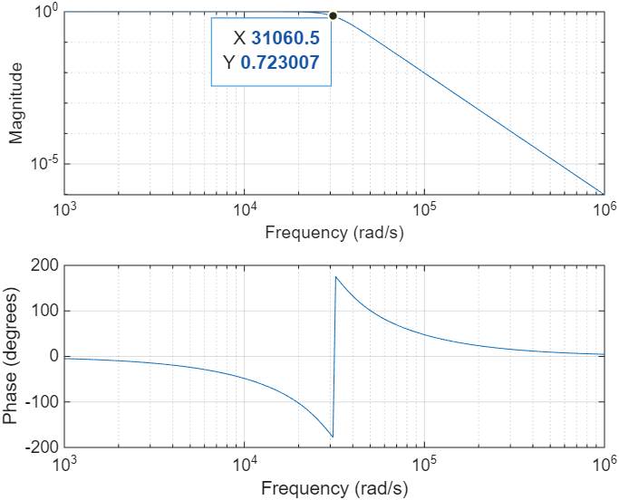

Demodulation#
NOT READY YET
1. Intoduction#
In modern communication, baseband signals (like voice or music) are rarely transmitted directly. Instead, they are shifted to higher frequencies to allow for efficient transmission and to enable multiple signals to share the same medium without interference—a process called Frequency Division Multiplexing (FDM).
However, a speaker or a digital audio player cannot use the high-frequency modulated signal directly. We must perform demodulation to shift the spectrum of the signal back to the baseband.
In this project, we explore the process of extracting original information from a modulated carrier—a fundamental operation in communication systems known as demodulation. The goal is to develop an intuition for frequency shifting and filtering by successfully recovering three distinct audio files from a single composite signal.
1. Signal Specifications#
For this project, we are working with high-fidelity signals:
Sampling Frequency (\(f_s\)): \(44,100\) Hz
Message Duration: \(10\) seconds
Message Bandwidth: \(5\) kHz (All original audio is band-limited to \(5\) kHz)
2. Amplitude Modulation (AM) Review#
In this project, we focus on Double-Sideband Suppressed Carrier (DSB-SC) modulation. A message signal \(m(t)\) is multiplied by a carrier wave at frequency \(f_c\):
From the properties of the Fourier Transform, we know that multiplication in the time domain corresponds to shifting in the frequency domain. This places the message spectrum at \(\pm f_c\), effectively moving the audio information far away from \(0\) Hz.
5. Preliminary Task: The C4 Tone Synthesis#
Before processing the .wav files, you will practice modulation using a synthesized C4 note (Middle C). A pure C4 note has a fundamental frequency of approximately \(261.63\) Hz. However, real instruments have harmonics that give the sound its “color” or timbre.
5.1 Synthesis#
Construct a signal \(m_{C4}(t)\) by summing \(20\) harmonics. If \(f_0 = 261.63\) Hz:
Note: Use \(a_n = \frac{1}{n}\) for a sawtooth-like timbre or \(a_n = \frac{1}{n^2}\) for a smoother tone.
2. Part I: Walkthrough — Filter Design and Modulation#
The following steps demonstrate how to synthesize a A4 piano tone, design a Butterworth low-pass filter (LPF), and modulate the signal.
2.1 Synthesizing the C4 Piano Tone#
A piano note is not a single sine wave; it consists of a fundamental frequency and multiple harmonics. We will generate a A4 note (\(f_0 = 440\) Hz) with 20 harmonics. To create a truly realistic piano sound in MATLAB, however, we need to go beyond just summing harmonics. A real piano note has two distinct characteristics:
Inharmonicity: The harmonics are slightly “stretched” due to string stiffness.
ADSR Envelope: The volume hits a sharp peak (Attack) and then decays exponentially over time.
In this section, we will generate a 10-second A4 piano tone. We will apply an exponential decay envelope to each harmonic to simulate the physical damping of piano strings.
2.1 Synthesizing the A4 Piano Tone with Decay#
Instead of a constant amplitude, we apply \(e^{-t/\tau}\) to each harmonic, where higher harmonics decay faster than the fundamental frequency.
%% 1. Parameters
fs = 44100; % High sampling rate (44.1 kHz)
T = 10; % Duration in seconds
t = 0:1/fs:T-1/fs; % Time vector
f0 = 440; % Fundamental frequency (A4)
%% 2. Realistic Piano Synthesis (Harmonics + Decay)
m_a4 = zeros(size(t));
num_harmonics = 20;
for n = 1:num_harmonics
% Fundamental and harmonic frequencies
fn = n * f0;
% Amplitude: higher harmonics start quieter
a_n = 1/(n^1.2);
% Decay: higher harmonics fade out faster (realistic physics)
tau_n = 3 / n; % Decay constant
envelope = exp(-t / tau_n);
% Accumulate the harmonic
m_a4 = m_a4 + a_n * envelope .* cos(2*pi*fn*t);
end
% Normalize to +/- 1 to prevent clipping
m_a4 = m_a4 / max(abs(m_a4));
% Listen to the result
soundsc(m_a4, fs);
2.2 Filter Design#
In a continuous-time course, we treat filters as differential equations or Laplace Transfer Functions \(H(s)\). We will design a 4th-order Analog Butterworth Filter with a cutoff frequency \(\Omega_c = 2π\cdot 5000\) rad/s (or 5 kHz).
3.2 Visualizing the Frequency Response#
Before modulation, we must ensure the signal does not exceed a 5 kHz bandwidth. We use a 6th-order Butterworth filter.
Before applying the filter, we must verify its “fingerprint” in the frequency domain. By using the freqz function, we can plot the magnitude and phase response to ensure the \(5\) kHz cutoff is sharp enough to reject the carrier components.
%% Filter Design (5 kHz Cutoff)
fc = 5000;
Wc = 2 * pi * fc; % Cutoff in radians/second
% 's' indicates an analog filter design
[b, a] = butter(4, Wc, 's');
% Create the Transfer Function H(s)
H = tf(b, a);
%% 2. Plotting the Analog Filter Response
figure;
freqs(b, a);
grid on;
This MATLAB code generates the plot shown in Fig. 1. If you click on the response curve and drag your mouse near the cutoff frequency of 31,416 rad/s (5 kHz), you will find the gain of −3.0 dB (or \(1/\sqrt{2}=0.707\)), where the output signal power becomes half of the input signal power.
{kind=link}

Fig. 1 5 KHz Butterworth low-pass filter#
We now pass our realistic piano sound through a 5 kHz Butterworth filter to prepare it for modulation.
[b, a] = butter(6, 5000/(fs/2));
% Apply the filter
m_filtered = filter(b, a, m_a4);
%% 4. Plotting Time Domain vs Frequency Domain
figure;
subplot(2,1,1);
plot(t, m_a4);
title('Time Domain: Realistic A4 Piano Tone (Decay Visible)');
xlabel('Time (s)'); ylabel('Amplitude');
xlim([0 2]); % Zoom into the first 2 seconds
subplot(2,1,2);
L = length(m_filtered);
f_axis = (-L/2:L/2-1)*(fs/L);
M_freq = fftshift(fft(m_filtered));
plot(f_axis/1000, abs(M_freq)/L);
title('Frequency Domain: Filtered Message Spectrum');
xlabel('Frequency (kHz)'); ylabel('Magnitude');
xlim([-10 10]);
1.3 Modulation (DSB-SC)#
Finally, we shift this realistic piano signal to a 25 kHz carrier frequency.
%% 5. Modulation
fc = 25000;
x_modulated = m_filtered .* cos(2*pi*fc*t);
figure;
plot(f_axis/1000, abs(fftshift(fft(x_modulated)))/L);
title('Modulated Signal Spectrum (Centered at 25 kHz)');
xlabel('Frequency (kHz)');
xlim([15 35]);
2. Part II: Deliverables — The Demodulation Challenge#
Using the filtering and modulation logic from the walkthrough, students must complete the following:
2.1 Recovery Tasks#
Download signal1.wav, signal2.wav, and signal3.wav.
Demodulate Signal 1 & 2 (DSB-SC):
Use \(f_{c1} = 15\) kHz and \(f_{c2} = 30\) kHz.
Perform coherent detection (Multiply \(\to\) Filter).
Demodulate Signal 3 (DSB with Carrier):
Use \(f_{c3} = 50\) kHz.
Perform envelope detection: \(y(t) = \text{LPF}\{ |x(t)| \}\).
Observation: Compare the sound quality of the envelope detector versus coherent detection for this signal.
2.2 Submission Requirements#
Comparison Plot: Show the time-domain envelope of the original piano sound versus the recovered sound.
Spectrum Verification: Provide the magnitude spectrum of the three recovered signals, showing that the high-frequency carrier has been successfully removed.
Audio Identification: State the contents of the three audio files.
2.3 Modulation (DSB-SC)#
Now, we shift our 5 kHz message to a higher carrier frequency (\(f_c = 20\) kHz) using Double-Sideband Suppressed Carrier modulation.
%% Modulation
fc = 20000; % Carrier at 20 kHz
carrier = cos(2*pi*fc*t);
x_modulated = m_filtered .* carrier;
%% Plotting the Spectrum
L = length(x_modulated);
f_axis = (-L/2:L/2-1)*(fs/L);
X_freq = fftshift(fft(x_modulated));
figure;
plot(f_axis/1000, abs(X_freq)/L);
title('Magnitude Spectrum of Modulated C4 Tone');
xlabel('Frequency (kHz)'); ylabel('Magnitude');
xlim([-30 30]); % Zoom in on the carrier region
3. Part II: Deliverables — The Demodulation Challenge#
Now that you understand the signal chain, you are tasked with recovering three different audio messages from the provided files: signal1.wav, signal2.wav, and signal3.wav.
3.1 Provided Signal Specs#
Signal |
Modulation Type |
Carrier Frequency (\(f_c\)) |
|---|---|---|
Signal 1 |
DSB-SC |
12 kHz |
Signal 2 |
DSB-SC |
25 kHz |
Signal 3 |
DSB (with Carrier) |
40 kHz |
3.2 Your Tasks#
Coherent Demodulation (Signals 1 & 2): * Multiply the received signal by a local carrier \(\cos(2\pi f_c t)\).
Apply the 5 kHz Butterworth LPF you designed in Part I.
Play the audio using
sound(y, fs).
3.3 Required Submission#
Plots: Magnitude spectra for all three signals before and after demodulation.
Verification: Identify the hidden audio message in each file (e.g., “The message in Signal 1 is a person speaking about…”).
Discussion: Explain what happens if your local carrier frequency in Part 3.1 is slightly off (e.g., 12.1 kHz instead of 12 kHz). Use the properties of the Fourier Transform to justify your answer.
6. Deliverables#
Filter Analysis: A plot of the Butterworth filter’s frequency response (Magnitude in dB).
Spectrum Plots: Magnitude spectra of the modulated C4 tone versus the original.
Audio Recovery: Successful demodulation of the three provided 10-second files.
Discussion: Explain why the \(441\) kHz sampling rate is necessary when dealing with carriers in the \(15\)–\(20\) kHz range, referencing the Nyquist criterion.
3. The Demodulation Process: Mixing and Filtering#
To recover the signal \(m(t)\), we use a coherent detector. This process consists of two primary stages that rely on the concepts of linearity and filtering you studied in Project 1.
3.1 Step 1: Mixing (Frequency Shifting)#
By multiplying the received signal \(x(t)\) by the same carrier frequency \(\cos(2\pi f_c t)\), we create a new signal \(z(t)\):
Using the trigonometric identity \(\cos^2(\theta) = \frac{1}{2}(1 + \cos(2\theta))\), we get:
This operation results in two components:
A copy of the original message \(m(t)\) scaled by \(0.5\) at baseband (centered at \(0\) Hz).
A high-frequency component centered at \(2f_c\).
3.2 Step 2: Low-Pass Filtering (The LTI System)#
To isolate \(m(t)\), we pass \(z(t)\) through a Low-Pass Filter (LPF). As you learned in Project 1, this LTI system can be characterized by its impulse response \(h(t)\). The output \(y(t)\) is the convolution:
The filter is designed to reject the high-frequency component at \(2f_c\) and pass the baseband signal \(m(t)\) unchanged.
4. Project Task: Recovering the Audio#
You are provided with three modulated .wav files. Each file contains an audio message modulated at a different carrier frequency \(f_c\). Your objective is to implement a demodulator in Python or MATLAB to recover and play the original audio.
4.1 Specifications#
The composite signals use the following carrier frequencies:
Signal 1: \(f_{c1} = 5\) kHz
Signal 2: \(f_{c2} = 10\) kHz
Signal 3: \(f_{c3} = 15\) kHz
4.2 Implementation Steps#
Load the Data: Read the
.wavfiles and determine the sampling frequency \(f_s\).Multiply: Generate a local carrier \(\cos(2\pi f_c t)\) and multiply it by the received signal.
Filter: Design a Butterworth or Ideal LPF with a cutoff frequency appropriate for human speech/music (typically around \(3\)–\(4\) kHz).
Normalize and Play: Scale the resulting signal to prevent clipping and use the system’s audio output to verify the result.
5. Key Takeaways#
Demodulation relies on the Frequency Shifting property of the Fourier Transform.
A multiplier (mixer) moves the signal spectrum, while a low-pass filter isolates the desired information.
Success in this project requires applying the LTI system concepts from Project 1—specifically, understanding how a filter’s impulse response removes unwanted high-frequency noise.